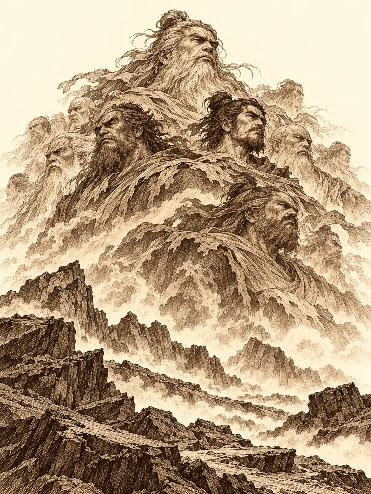

Capítulo 145
Regreso ante el guardián
Libro IX · Mareas y muertos
Llovía sobre el campamento del sur, una lluvia fina y terca que hacía brillar las lonas de las tiendas y convertía el barro en una pasta que se agarraba a las botas. Banzo cruzó entre los soldados saludando con la cabeza y apartó la cortina de la carpa de los generales. Dentro olía a aceite de máquina y a metal caliente. Guxi estaba inclinado sobre una piedra de comunicación, rodeado de tuercas, y no levantó la vista.
"¿Qué te ha pasado en el brazo?", preguntó al fin.
"Un entrenamiento. Están así las cosas".
Kurobane se había quedado fuera, sujetando la cortina con una mano, y la soltó para dejarlos hablar. Banzo había preparado aquella expedición con cuidado. Llevaba en una caja pequeña de madera una flor seca, de las que crecían donde caían los rayos, como ofrenda para el templo del oeste, y quería preguntar por las esferas y por la cúpula. Necesitaba a todos, también a los que no querían verse. Serafina había aceptado. Le había dicho que aquello sería solo profesional, y él no le había pedido más. Lo que quedaba era Guxi.
"Es primordial teneros a los dos en el equipo, y teneros al cien por cien".
"Eso no va a ser posible. Llevo mucho tiempo sin estar al cien por cien". Guxi dejó la herramienta. "Cada vez que estoy cerca de alguien, la cago y hago daño. Seguramente dentro de una semana me vaya de Kuroto".
"Si esa es tu decisión, no puedo obligarte. Pero si estás rodeado de gente, al menos puedes compartir el dolor. Si sigues así, vas a entrar en una espiral de la que no sé cómo saldrás".
"Toda mi vida he negado que fuera igual que mi padre, y acabo de convertirme en eso. En alguien que rompe lo que quiere".
"Siempre te oigo hablar de tu padre y de tu maestro. Muy poco del artífice de los cazadores".
Guxi se llevó la mano al cuello, se quitó el collar y se lo tendió. Banzo no lo cogió enseguida. Lo miró en la palma ajena, la piedra que significaba lo que significaba, y habló despacio.
"Si tú fallas como cazador, yo fallo como líder. Mi collar iría a la shogun junto al tuyo. Esto significa compromiso. Significa familia, y que, con nuestros problemas, estaremos ahí para los demás. Te pido ayuda. Lucha al lado de Serafina como lucharías al mío. Cuando acabemos la misión, toma la decisión que tengas que tomar".
Guxi volvió a ponérselo, por dentro de la camisa, donde no se viera.
"No le digas nada a ella".
Al salir, Banzo encontró a Kurobane empapado, esperando con una impaciencia que no era propia de él, y le sonrió a Guxi por encima del hombro.
En la base, mientras tanto, Sirth se había sentado junto a Serafina. Se había ofrecido a acompañarlos a hablar con los guardianes y había aclarado, por si alguien lo dudaba, que nunca había sido líder de los cazadores de manera oficial.
"No hemos hablado mucho usted y yo, señorita. ¿Está bien?".
"No, no estoy bien. ¿Qué sentirías si estuvieras a nada de casarte y llegara la invitación a la boda de tu primer amor, y tu prometido dijera que ojalá hubiera sido él?".
El clérigo le cogió las manos e inclinó la cabeza.
"Lo siento mucho".
"Tengo ganas de golpearlo, pero estoy intentando controlarme. Son un montón de emociones que no consigo dominar".
"Le cuento un secreto. Cuando me entra ese afán de hacer daño, pienso en cosas que me hayan llenado el corazón de júbilo".
"Ese es el problema. Casi todos esos recuerdos los provocó él, y él mismo los ha destruido".
"Aun así, no los pierda. Al final es lo único que nos queda. Puede que ahora duelan, pero algún día la harán sonreír". Le dio unas palmaditas y le levantó el puño, como quien anima a un alumno antes de una carrera. "Cualquier cosa, dígasela al tío Sirth".
El barco era de los cazadores y del shogunato a la vez, y para zarpar hizo falta pedir permiso en el puerto de Sho. Durante las horas de travesía, Serafina se sentó en cubierta a rehacer sus vendas una y otra vez, solo por tener las manos ocupadas, y de vez en cuando se le escapaba una sonrisa que enseguida se borraba. Kurobane, que aún no se acostumbraba al mar, se quedó a su lado apoyado en la borda, mirándola como si quisiera ver algo detrás de sus ojos. Guxi se encerró en la sala de máquinas.
Banzo bajó a buscarlo.
"Esto que quede entre tú y yo", le dijo el artífice. "Cuando tenía dieciséis años vivía con otros dos hermanos. No son de mi sangre. Ella fue mi primer amor y no me correspondió, y ahora se casa dentro de un mes. Al leer la carta dije que ojalá hubiera sido yo. No lo sentía. No sé de dónde salió".
"¿Tienes claro que no sientes nada por ella?".
"Clarísimo. Gracias a haber sentido aquello de joven sé que lo que siento por Serafina es de verdad".
"¿La invitación es para ti solo?".
"Puedo llevar acompañante".
"¿Y por qué no vamos todos? Invita a los cazadores y demuéstrale que no sientes nada".
"Si se lo dices a ella, te dirá que no. Te lo digo de antemano".
Banzo lo apuntó en su lista de cosas importantes y subió a cubierta.
La isla era una montaña sola en medio del mar. Un camino de piedra la rodeaba en espiral, y a medida que subían el aire se volvía delgado, frío, difícil de tragar. Hubo un momento en que dejaron atrás las nubes. Desde arriba vieron un mar blanco extendido bajo sus pies y, dentro de él, los rayos de una tormenta que caían hacia abajo, hacia un mundo que ya no estaba a su altura. Al final del camino se alzaba un templo azul y blanco.
Kurobane había estado allí antes, con Sun Gukon y con Katari. Fue el primero en llegar a la puerta. Hizo una reverencia con las manos juntas y abrió muy despacio.
"Tened cuidado. La última vez había trampas".
Avanzó agachado, y entonces les explicó por qué: las losas del pasillo eran placas de presión, y al pisarlas saltaba un rayo de los ojos de una estatua a los de la de enfrente. Banzo fue el único que lo comprobó en su propia carne. La primera descarga le hizo salir humo por los costados. "Estoy despierto", dijo, "estoy despierto". Serafina cruzó de un único salto, larguísimo, sin tocar nada; los demás pasaron agachados o volando. Banzo tomó carrerilla para el segundo tramo, dio un paso atrás de más, pisó otra placa y recibió otro rayo. A la tercera llegó al otro lado de un salto y se miró la única mano que le quedaba.
"Se supone que cada uno aporta algo al grupo. Espero que lo mío sea la fuerza bruta".
El interior estaba lleno de estanterías con libros antiguos. Al fondo había un altar y, sobre él, una especie de caja decorada con rayos y tigres. Kurobane se arrodilló delante.
"Gran guardián del oeste, atiende mi llamada. Necesitamos...".
"No te precipites", le dijo Sirth.
Banzo se quitó las armas y el yelmo y los dejó en la puerta.
"Las otras veces creo que no actuamos del todo bien. Vamos a presentar el máximo respeto posible".
Dejó la flor en el altar. Rezaron. Buscaron en los libros algún ritual, alguna fórmula, y los libros solo repetían lo mismo con palabras distintas: tigre blanco, rayo, oeste. No respondió nadie. Kurobane tocó con su estoque uno de los rayos de la trampa y la descarga le recorrió el brazo y lo dejó temblando, con el arma ennegrecida. No le dio nada más.
Fue Sirth quien se fijó en el aparato del altar. No tenía magia alguna. Eran unos raíles tallados en forma de rombo, con cuatro puntos cardinales y un agujero en el centro, y dos piezas que se deslizaban por ellos: una con forma de tigre y otra con un rayo grabado. Probaron combinaciones. Tigre al este, rayo al oeste. Las dos piezas en el centro. Tigre al sur. Nada. Hasta que alguien dejó el tigre en el centro y Banzo llevó el rayo hasta el oeste.
La descarga sacudió el templo entero. Cuando se les aclaró la vista, Byakko estaba allí, un tigre blanco enorme sobre la caja del altar.
El guardián los conocía. Recordaba sus errores, uno por uno, y no parecía haberlos perdonado.
"La esfera que contenía el rayo ya no está aquí", empezó Banzo.
"Esa baratija tampoco la he echado de menos. Para vosotros parece poderosa. Para mí no".
Banzo le explicó que querían reparar la cúpula. Byakko contestó que lo que estaba roto no se podía restaurar, que las esferas no harían daño a los templos ni a los guardianes, y que ya estaba cansado de que vinieran a exigirle respuestas y favores.
"Tú no pides ni exiges, mortal", le dijo cuando el goliat insistió. "Por eso sé que quieres algo a cambio".
Kurobane dio un paso al frente. Quería ver al dragón; quería que lo ayudara a dominar su sombra. Recordó que la última vez el dragón le había hablado de una misión especial para él.

"¿Y crees que esa misión es ayudarte a controlar tu sombra?". Byakko lo miró desde arriba. "No eres un elegido de los guardianes. Esa esencia es de Sun Gukon y sigue siendo suya. No puede transferirse. Creo que ya te lo dije".
Aun así, entre reproches, accedió a enviarlos ante el dragón. Se formó una tormenta bajo el techo del templo. Los rayos empezaron a caer sobre las columnas, sobre el altar, cada vez más cerca, hasta que les cayeron encima. A Serafina se le erizó todo el pelaje.
Cuando abrieron los ojos estaban en una sala dorada, frente a un dragón enroscado como una serpiente, uno de esos dragones largos y antiguos de las pinturas, que levantó la cabeza para mirarlos desde muy arriba.
Banzo se presentó, aunque el dragón lo miró con una indiferencia absoluta, y le preguntó por las esferas.
"Son esencia elemental pura", dijo el dragón. "Solo podrá sostenerlas quien sea afín a su elemento. Alguien afín al agua sostendrá la del agua. Alguien afín al rayo, la del rayo. Una persona, una esfera".
"¿Y si alguien las reúne todas? ¿Qué pueden crear juntas?".
"No lo sé".
Banzo le ofreció una campana con el símbolo de los cazadores, como prueba de su compromiso. "Hemos fallado", le dijo, "y seguramente volveremos a fallar, pero nuestro compromiso con los guardianes es eterno". El dragón la dejó, sin mirarla apenas, junto a sus libros, y su cuerpo empezó a enroscarse alrededor del grupo.
"Es la tercera vez que venís los cazadores. La primera os dimos la protección de la cúpula. La segunda vinisteis suplicando porque uno de los vuestros había fallado. Y ahora venís a prometerme que seguiréis defendiendo. ¿Por qué debería fiarme?".
Kurobane se adelantó. Ofreció su cuerpo y su alma. Dijo que daría la vida por proteger a todos. Una de las manos del dragón cayó sobre él y sus dedos se cerraron como los barrotes de una jaula.
"¿Crees que tu simple muerte de mortal protegería algo? ¿Quieres que lo comprobemos?".
Los dedos se fueron cerrando. Kurobane le sostuvo la mirada.
"Lucharé hasta que la última gota de mi sangre ruede por el campo de batalla. Lo hice durante dos oleadas de demonios y pienso hacerlo hasta acabar con ellos".
"Eso no es desear la muerte. Entonces, ¿por qué me dices que la deseas? Deseando la muerte lo único que tienes es muerte. ¿Puedes hacer algo desde ahí?".
Lo soltó. Kurobane se puso en pie y cambió de discurso: lucharía, investigaría, seguiría vivo. Y entonces volvió a pedir ayuda, y el dragón se rio.
"La última vez que estuve ante un dios", dijo el joven, "buscaba un campeón. Quiero ser el vuestro".
"¿Crees que soy un dios?".
"Para mí lo eres. Y para mucha gente de Kuroto".
"Pues entonces sois más idiotas de lo que pensaba. No soy un dios ni pretendo serlo, ni quiero un campeón, porque no me sirve. Somos la esencia de Kuroto. No queremos vuestras plegarias. Nos da igual quién gobierne esta tierra, mortales, demonios u otras criaturas. ¿Por qué te lamentas, en vez de luchar?".
Kurobane desenvainó el estoque.
"¿Contra qué debo luchar?".
El dragón sonrió y desapareció.
Del norte cayeron rayos. En otro punto de la sala se levantó un remolino de agua como un tornado, de un tercero brotaron rocas del suelo y del cielo llovió fuego. Cuando todo se asentó, cuatro guardianes los rodeaban: un tigre de rayo, un dragón de agua, una tortuga de piedra y un ave de fuego.
Banzo apoyó la mano en el hombro de Kurobane y lo apartó de un empujón.
"Has sido un egoísta. Cuida de tus compañeros".
Luego se fue a por el tigre con las manos vacías, porque sus armas seguían en la puerta del otro templo. Kurobane, todavía rojo de rabia, le dejó al alcance uno de sus estoques, y el goliat lo agarró sin dar las gracias.
Fue una pelea larga. Guxi plantó sus torretas y las usó para envolver a los suyos en una vida prestada que aguantaba los golpes que no deberían haber aguantado. Sirth combatía a la vez con su eco y con la magia de la muerte, y protegía a quien tuviera más cerca. Serafina golpeaba con las vendas y se retiraba de un salto antes de que la alcanzaran. El hielo de Guxi derribó al ave de fuego, y de sus cenizas volvió a alzarse, entera, como si nada; Kurobane la abatió por segunda vez. Entonces el dragón de agua abrió las fauces y su aliento helado lo dejó tendido en el suelo, sin sentido.
A Banzo le pasó algo que no le había pasado nunca. Su furia se calentó por dentro hasta que el aire a su alrededor tembló de calor, y a su espalda se alzaron sus ancestros, enormes, como una montaña de hombros y rostros antiguos. Con ellos encima venció al tigre. Venció a Genbu, la tortuga. Golpeó al último guardián mientras Sirth se abría una herida a sí mismo para poner en pie a Kurobane, y Guxi y Serafina sostenían la línea. Como el dragón de agua seguía en pie, Banzo soltó a sus espíritus. Salieron de su cuerpo todos a la vez, se metieron en la criatura y la destrozaron por dentro. El guardián cayó, y en el mismo instante cayó Banzo, sin furia y sin espíritus, desplomado como un árbol.
Los cuatro guardianes se levantaron. No les quedaba ni una herida. Se reunieron en el centro de la sala y miraron a los cazadores.
"Sois más fuertes. Cada vez más. Seguid vuestro camino".
Kurobane se adelantó otra vez. Repitió que pelearía contra cualquier demonio, contra cualquier dios de cualquier panteón, y pidió saber cuál era su misión.
"Él no te ha dado ninguna misión contra ningún demonio", contestaron los cuatro a una. "Vas a tener que esperar. No queremos vuestros sollozos ni vuestras súplicas. Si insistís, es que no habéis entendido nada".
"Creo que con este combate me merezco una respuesta".
"Con este combate os merecéis poder marcharos".
A Kurobane se le tensaron las venas del cuello y los ojos se le volvieron rojos. Banzo había despertado. Se levantó con esfuerzo, se puso a su espalda y cogió el estoque prestado por la hoja, como un martillo, para dejarlo inconsciente de un golpe con la empuñadura. Kurobane lo notó. Se volvió y le detuvo el brazo antes de que bajara.
"No hace falta, Banzo. Vámonos".
Le devolvió el estoque. Banzo dio un paso, extendió el brazo para decir algo y volvió a caer de bruces, agotado, delante de los guardianes.
"Ayúdame con el grandullón", le dijo Sirth a Guxi.
Lo cargaron entre los dos. Antes de que se fueran, el dragón apareció a su lado y les dedicó una sonrisa pequeña.
"Aún os falta mucho por entender. Nos volveremos a ver cuando estéis listos".
Los devolvió al templo de Byakko, donde recogieron lo que habían dejado en la puerta, y bajaron la montaña hacia el barco. No llevaban la cúpula reparada, ni una bendición nueva, ni la misión que Kurobane había ido a buscar. Llevaban lo que el dragón les había dicho de las esferas y una idea que no terminaba de caberles en la cabeza: que aquellos seres no eran dioses obligados a ayudarlos, y que nunca lo habían sido.
Kurobane no volvió a la base. Corrió hasta su casa del sur a pesar de las heridas y cayó frente a las escaleras. Serafina, que lo había seguido herida también, lo levantó y lo sentó dentro.
"He perjudicado la misión", dijo él. "He puesto lo mío por delante de todos".
"Todos nos equivocamos". Ella entendía lo desesperado que estaba por dominar a Osuray. "Respira. No te castigues. Habrá otra oportunidad".
Kurobane la abrazó y le dijo que confiaba en ella y en los que lo habían acompañado. Serafina le ofreció desahogarse sin que nadie lo juzgara y se puso a buscar vendas y ungüentos.
Esa misma tarde, Sirth fue a ver a Banzo, que repasaba dibujos de las esferas y listas de posibles equipos. El líder se culpaba de todo, de Kurobane, de Guxi, de Serafina. El clérigo temía que el odio de Osuray acabara consumiendo al muchacho, pero traía una noticia: existía un ritual capaz de salvarlo y destruir a la sombra. Sin estatua, explicó, Osuray no tendría adónde volver. No conocía aún los detalles. Lo que sí había averiguado, en una cofradía de ladrones de los barrios bajos, era que Danifae había preguntado por ese mismo ritual meses atrás.
Los interrumpió la voz de Guxi saliendo de una piedra. El artífice probaba su aparato de comunicación, y Channi, que cazaba insectos en el jardín, creyó que había alguien encerrado dentro e intentó liberarlo a golpes. Persiguiendo después una mosca, le arañó la cara a Banzo sin querer, y terminó comiéndose la mosca. Banzo acabó aceptando, de mala gana, que quizá tendría que hablar con Danifae. Sirth prometió acompañarlo.
En el palacio, Calista apoyó la frente en la de Gelbreak y le dijo que no necesitaba que cambiara para estar a su altura, que le bastaba con que se quedara y estuviera dispuesto a sostenerla. Él le devolvió una de esas frases que ella siempre decía, le acarició la mejilla y la besó.